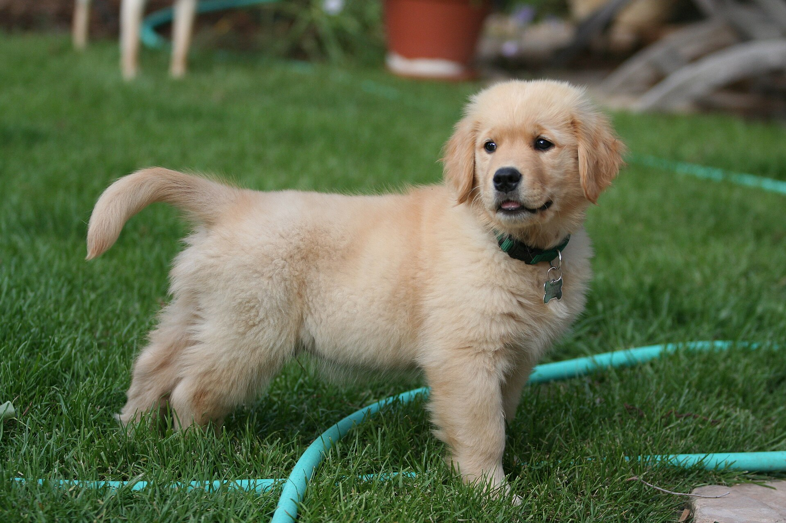
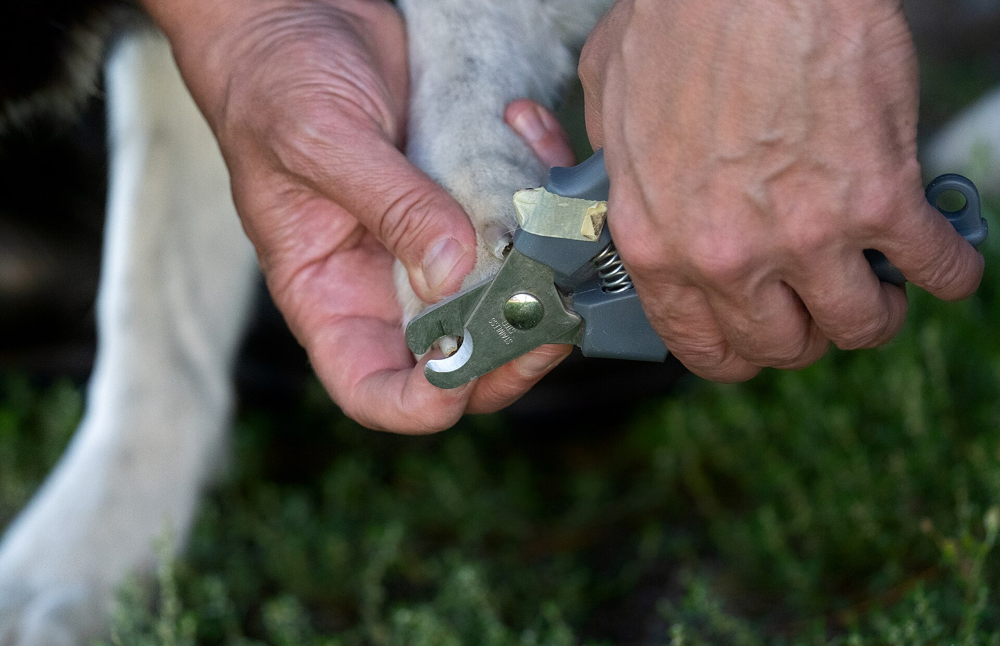
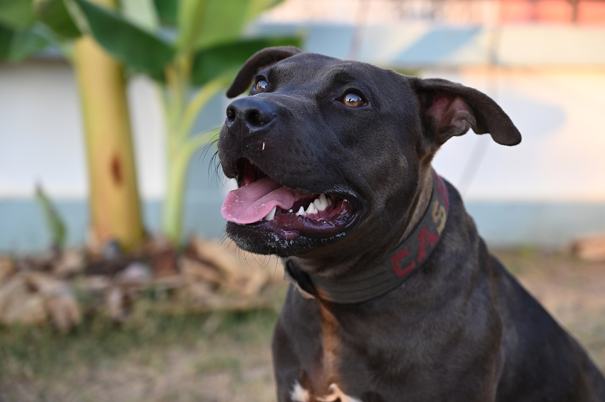
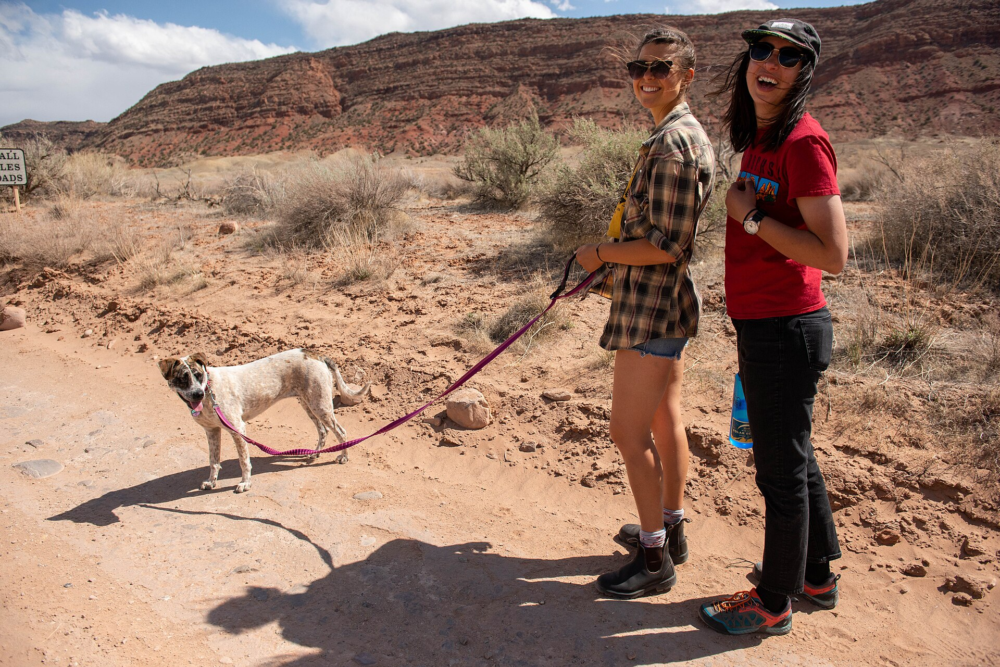

Klåda och hudinfektion
En hund som kliar sig tills pälsen tunnas undersöker vi med hudskrapa, svampodling och mikroskop. Svampodlingen svarar inom tre dagar, och de flesta hundar är besvärsfria efter två veckor med behandling.
En årskontroll hos oss tar 30 minuter och kostar 890 kr. Vi känner igenom hunden från nos till svans, väger den och går igenom tänder, öron och leder. Behövs blodprov eller röntgen gör vi det under samma besök, utan att du behöver boka en ny tid.
Förebyggande
Hundar visar sällan att något gör ont förrän besväret har hunnit långt. Vid en årskontroll lyssnar vi på hjärtat, känner igenom buken och kontrollerar leder och tänder. Vikten jämför vi med förra årets siffra, eftersom två kilo upp eller ner ofta är det första tecknet på att något är fel.
Från fyra års ålder tar vi blodprov vid den årliga kontrollen. Provsvaren visar lever- och njurvärden innan hunden märker något själv, och de blir en utgångspunkt för resten av hundens liv. Analyserar vi på plats har du svaret inom 20 minuter.
Yngre hundar klarar sig oftast med en kortare kontroll på 20 minuter för 690 kr. Från åtta års ålder utökar vi undersökningen med urinprov och blodtryck, eftersom knölar, hjärtljud och tandproblem blir vanligare med åren.

Program och priser
Valpprogrammet är det enda paketet där flera besök ingår. Annars betalar du per besök, efteråt, och undersökningen ligger i priset.
| Ålder | Innehåll | Pris |
|---|---|---|
| Valp 8–20 veckor | Tre besök, vaccination, chipmärkning | 1 850 kr |
| Ung hund 1–3 år | Årskontroll och vaccination | 890 kr |
| Vuxen 4–7 år | Årskontroll, blodprov, tandkontroll | 1 450 kr |
| Senior 8 år och uppåt | Utökad kontroll, blodprov, urinprov | 2 100 kr |
Priserna avser undersökning och provtagning. Kostar behandlingen över 3 000 kr får du en skriftlig uppskattning innan vi börjar. Räknar du på ett större ingrepp kan du använda priskalkylatorn.
Besöket
Boka på telefon 08-410 522 30 eller i formuläret. Vi vill veta hundens ålder och vad som krånglar, och vanliga besvär får en tid inom två arbetsdagar.
Ta med försäkringsnummer om du har ett avtal. Du får en kostnadsuppskattning skriftligt innan undersökningen börjar. Väntetiden i väntrummet ligger under tio minuter de flesta vardagar.
Veterinären känner igenom hunden och går igenom symtombilden med dig. Behövs röntgen eller blodprov tar vi det direkt, medan hunden ligger kvar på bänken.
Du får medicin, hemvårdsråd och en skriftlig sammanfattning till din e-post samma dag. Ett återbesök bokar vi in innan du går, om det behövs.
Symtom
Det här är de ärenden vi ser oftast. Undersökningen kostar 690 kr, och den vård som följer prissätts enligt prislistan.
En hund som kliar sig tills pälsen tunnas undersöker vi med hudskrapa, svampodling och mikroskop. Svampodlingen svarar inom tre dagar, och de flesta hundar är besvärsfria efter två veckor med behandling.
Hunden skakar på huvudet och det luktar om öronen. Vi tittar med otoskop, tar prov och rengör örat på plats. Behandlingen tar oftast tio dagar med örondroppar, och vi vill se hunden igen efter tre veckor.
Hälta utreder vi med röntgen och undersökning av leder och rygg. Vid misstänkt korsbandsskada tar vi bilder i två vinklar. Mindre ingrepp gör vi här, avancerad ortopedi remitteras samma dag.
Röntgen och bilddiagnostikKräkningar och diarré reder vi ut med blodprov och ultraljud. Ett dygn med dropp och provsvar kostar från 3 200 kr. Äter hunden inte efter två dagar ska den in, oavsett ålder.
Akut och jourTandsten ger dålig andedräkt och inflammerat tandkött. Vi skalar tänderna under narkos och röntgar rötterna innan någon tand dras. Efter ingreppet går hunden oftast hem samma dag.
Tandvård under narkosKennelhosta smittar snabbt mellan hundar som möts på dagis, i träning eller i hundgård. Torr hosta i tre till tio dagar är typiskt. Vaccinet ger skydd i ett år och tas med fördel varje höst.
Vaccination mot kennelhosta
Egen utrustning
Digitalröntgen står i rummet intill undersökningsbordet. Bilderna är klara på under två minuter, och du får dem skickade till din e-post samma dag tillsammans med veterinärens bedömning.
Laboratoriet analyserar blodstatus, levervärden, njurvärden och urinprov på plats. Vid akuta fall har vi svar inom 20 minuter, vilket betyder att behandlingen kan börja medan hunden ligger kvar på bänken.
Operationssalen används för kastrering, tandvård och mindre ingrepp. Andning och hjärtfrekvens övervakas under hela narkosen, och vi ringer dig när hunden vaknar, oftast inom en timme efter ingreppet.
En hund som plötsligt haltar, kräks upprepade gånger eller har svårt att andas ska in samma dag. Ring innan du kommer, så förbereder vi undersökningsrum och labb medan du är på väg.
Akutundersökning kostar 1 200 kr på vardag dagtid och 1 900 kr på jourtid. Röntgen och blodprov tillkommer enligt prislistan, och vi ringer innan summan passerar 3 000 kr.
Det mesta av hundens hälsa sköts mellan besöken. Tandborstning två gånger i veckan med hundtandkräm tar en minut och gör mer för tänderna än något tuggben. Vi visar tekniken på kliniken vid ett vanligt besök, utan extra kostnad.
Fästingmedel och avmaskning lägger vi upp efter var hunden rör sig. En hund som springer i högt gräs behöver skydd från april till oktober, medan en hund som mest går på asfalt klarar sig med en enklare plan. Vi går igenom valet vid årskontrollen.
Kloklippning kostar 295 kr och tar ungefär 15 minuter. En långhårig hund som behöver klippas bokas in på 60 minuter för 795 kr, inklusive bad och en genomgång av huden.


En hund som stannar på promenaden och vägrar röra sig har nästan alltid ont någonstans. Vanliga orsaker är hälta, ryggbesvär och ömmande trampdynor. Skakar hunden eller andas snabbt ska den in samma dag, inte nästa vecka.
Vid rörelseproblem undersöker vi leder och rygg i flera steg. Vi röntgar ryggrad och höftleder och känner igenom muskulaturen, eftersom en hund kan avlasta en öm led så länge att muskler och senor tar skada i stället.
Träning av muskulaturen ger bättre resultat än lång vila i de flesta fall. Efter en kortare viloperiod får du ett program med koppelpromenader, simning eller balansövningar, och vi följer upp efter sex veckor.
Frågor och svar
En gång om året räcker för de flesta hundar under åtta år. Från åtta års ålder rekommenderar vi en kontroll varje halvår, eftersom njurar, hjärta och tänder förändras snabbare då. Seniorprogrammet kostar 2 100 kr och tar 45 minuter.
Akutundersökning kostar 1 200 kr på vardag dagtid och 1 900 kr på jourtid, alltså kvällar och helger. Röntgen kostar 1 450 kr och ett blodprov 690 kr. Vi ringer innan summan passerar 3 000 kr.
Fasta behövs bara om hunden ska sövas. Då ska den inte äta efter klockan 22 kvällen innan, men gärna dricka vatten. Vid en vanlig årskontroll går det bra att ge frukost som vanligt.
Vaccinet mot valpsjuka, parvovirus och hepatit skyddar i tre år efter grundvaccinationen och den första påfyllnaden. Kennelhosta och leptospiros skyddar i ett år och behöver förnyas varje höst. Vi lägger en påminnelse i journalen.
Vi tar emot hundar upp till 70 kg. Undersökningsbänken är 1,4 meter lång och kan sänkas till golvnivå, så en grand danois eller sankt bernhard behöver aldrig lyftas. Priset är detsamma som för en liten hund.
Vi har lediga tider inom två arbetsdagar de flesta veckor och tar emot akuta hundar dygnet runt. Ring 08-410 522 30 eller skicka en förfrågan via formuläret.